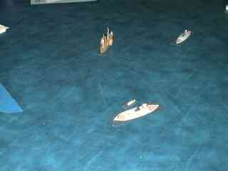
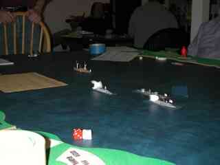

This ACW naval miniatures scenario was played at EdCon IX in February, 2002. The paint was barely dry on the shoreline and some of the ships, but it all came together pretty well in the end.
This is a "grudge match" because we played nearly the same scenario last year, albeit some of the cast was different. The scenario was a bit better defined this time around, too. Like players, referees benefit from a bit of experience.
Rules used: Smoke on the Water, with 1/600 ships from Thoroughbred Models. Photos are courtesy of Peter Giancola. Thanks, Pete!
If you haven't heard of Trent's Reach, you're not alone. It's not as famous a battle as Hampton Roads (Monitor vs Virginia/Merrimack) or the adventures of the Arkansas. What happened was this: in early 1865 the Confederate James River squadron sortied from Richmond in hopes of disrupting Grant's supply line and raising the siege of Petersburg. The result was almost a non-battle, as the squadron had a comic propensity to run aground as they came down the river. One ship would run aground; another ship would come up to help and ground itself in the process, etc. Real Keystone Kops material. The delays in getting back underway forfeited the advantage of surprise, allowing the dilatory Union squadron commander to come up and, in combination with shore batteries, chase the Confederates back up the river.
So the scenario here is a bit of a what-if, in that the Union response time is delayed slightly compared to historical performance, and the Confederates are assumed to be led by a more aggressive commander with clear orders to get through the Union squadron. To win, the Confederates must exit ships from the east edge of the map. Either side wins by destroying the other, of course.
I made some scenario setup sheets for the Union and Confederate players which give a little more background on the specifics of this scenario. I've also got some refereeing and order of battle notes which might be useful.
(Click on the images for a better view)
That's me (standing) doing the referee thing ("Now where was that rule again?") with the Confederate team, Tito Autrey, Chuck Frascati, and Jim Pyle, on the west edge of the map. They commanded the following squadron:
| Virginia II | ironclad | grounded at start |
| Richmond | ironclad | grounded at start |
| Fredericksburg | ironclad | enters turn 1 |
| Drewry | paddlewheel gunboat | grounded at start |
| Hornet | torpedo boat | enters turn 1 |
| Scorpion | torpedo boat | enters turn 1 |
There were several other Confederate ships present, but we limited players to two ships each to speed play and lighten the workload on each player.
The blue masking tape on the map (barely visible in front of me)
represents a line of Union obstructions: sunken ships, booms, shallows, etc. Ships can run over
it, but risk grounding if they do. Why doesn't it extend all the way across the river? It did,
actually, but when the scenario begins Fredericksburg and the wooden vessels have
already sounded out the obstructions and removed some of the booms during the previous night. (This is historical;
Fredericksburg went a couple of miles downriver in the night, only to come back when
the other ironclads failed to join her. Which they did because they were, you guessed it, aground.)
On the Union side were Mike Rea, Matthew Beach, and Pete Giancola. Pete's not shown because he was taking the pictures! The Union squadron includes the fearsome double-turreted monitor Onondaga (in front of Mike), paddlewheel gunboats Hunchback (at the edge of the picture) and Massasoit, and two torpedo boats.
The Union side also has Battery Wilcox, with one light and one medium rifled gun, which is on the land tile at Matthew's left elbow.
All Union ships actually begin off map, so this picture was taken after several turns had already passed.
The game opens with a fair bit of dierolling, as the Confederates try to get their stuck ships underway, and the Union players try to get their ships on the map. Historically, the Confederates had bad rolls and the Union had good rolls, so to speak. But here, Virginia II freed itself on the first turn, joining the rest of the Confederate squadron entering the map. Turn 2 saw Drewry break free and the Confederate ships maneuver slowly around the obstructions on the south half of the river.
Poor Richmond broke the streak of Confederate good luck. She kept trying to break free. And trying. And trying....
Meanwhile, the Union wooden ships entered pretty sharply, but Onondaga, the sole ironclad, stubbornly refused to show up until three or four turns in. For a while, it looked like Hunchback was going to face the entire Confederate fleet alone. With no other targets nearby, she took the brunt of the Confederate fire, and turned to Swiss cheese pretty quickly.
You might wonder, given the situation, why the Confederate commanders look so glum,
in this picture, but as we resolved the move (turn 4 or 5) . . .

. . . it turned out that a Confederate torpedo boat had rammed the Virginia II. Which is bad, because the torpedo boats are armed with a torpedo that explodes on contact. Ooops! The result was a sunk torpedo boat, and a moderate leak in the Virginia II.
Somewhere around this time the Union scored a lucky hit on Drewry, which killed its captain and pilot. This hampered its manueverability a bit; indeed, I thought that it would be Drewry rather than a torpedo boat that collided with a friendly ship.
Earlier I had been worried that the Confederates would rush to an easy
victory before the Union woke up. Now I worried that the Virginia II would sink
before the action had really begun. Fortunately, the ironclad's crew stoppered the leak after a couple of
turns, before serious damage was done.
The Confederate ships continued to manuever around the shallows in line ahead formation. I'd heard of admirals crossing the 'T' before, but here the Hunchback had crossed an 'S'! Unfortunate Richmond was still aground. Onondaga and Massasoit rushed in to take some pressure off Hunchback.
Both sides now had torpedo boats near the enemy, and I was looking forward to exercising the collision and torpedo detonation rules again. But the two boats between the fleets were shot to splinters, and the remaining Union boat rammed his squadron mate Hunchback rather than the enemy. (The picture actually shows the position just before the collision, but the ships couldn't turn quickly enough to avoid brushing against each other on the following turn.) The boat survived the collision, but her torpedo didn't, so all she could do in the future was absorb enemy shells. A few turns later she was sunk.
Hunchback fought to the last, but drew so much fire that she
was sunk in one turn. Unsurprisingly, wooden ships really have a hard time surviving against ironclads.
Passing the obstructions, the Confederates spread out a bit, with Virginia II heading for the south side of the river, Drewry going down the middle, and Fredericksburg heading for the north bank. Unfortunately, the latter misjudged its course and ran aground on the edge of the obstructions. Richmond finally got underway, though she doesn't show up in this picture.
On the Union side, Onondaga continued straight ahead. Around this time the Confederates nailed her with two lucky hits. One jammed a gun port on the forward turret, taking away 25% of the ship's firepower; the other hit the rudder. We had to roll to see which way the rudder jammed, and this was a very tense roll indeed. There was roughly a 60% chance that the ship wouldn't be able to turn to port, which would have been disastrous given the ship's position. But the dice gods wore blue, and Onondaga only lost the ability to turn to starboard.
So Onondaga engaged Richmond and Fredericksburg, while the two wooden vessels exchanged fire, and Virginia II and the shore battery took potshots from the side.
The new piece of blue masking tape marks the remains of Hunchback.
Several fires broke out on Massasoit. The crew bravely fought on for a few more turns, but the fire got out of control and forced the crew to abandon ship. Virginia II sped off the map more or less unharmed (thick armor is nice!), while Drewry lost a paddlewheel, a almost all her hull, and yet another captain. The accumulated damage immobilized her and she gradually drifted to a halt.
Battery Wilcox would no doubt have finished off Drewry, but events near the obstructions
focused our attention there.
Fredericksburg had been getting the worse of her exchange with Onondaga for several turns when a lucky shot from Battery Wilcox, of all places, scored a critical hit and Fredericksburg's boilers burst, forcing the abandonment of the ship.
With Richmond finally underway, it seemed like a good bet that she'd actually get off the map, but next turn she pulled up near the battle and Onondaga burst her boiler, too. The odds of two burst boilers so close in time are about 1 in 100,000, but the unpredictability is why we game, right?
Since Onondaga was the only mobile ship on the map, we called it a day.

Who won? I ruled it a Union marginal victory. The only effect of the torpedo boats was to inflict a hit on their own side, so they were a wash. The Confederates sunk two Union paddlewheelers, while losing one gunboat and two ironclads themselves: advantage Union. Finally, Virginia II had been reduced to Medium speed and had lost over 25% of her hull points, while Onondaga was still Fast and had under 25% damage. So even though Virginia II was farther down the river, Onondaga could catch up fairly quicky and had a reasonable chance of winning.
It seems to me that this is a pretty common result, so maybe I should have
ruled it an historical victory but a player draw. See the
referee notes
for some additional thoughts.
Union Player Notes | Confederate Player Notes | Referee Notes
{kind=link}
{kind=link}
{kind=link}
{kind=link}
{kind=link}
{kind=link}
{kind=link}
{kind=link}
{kind=link}